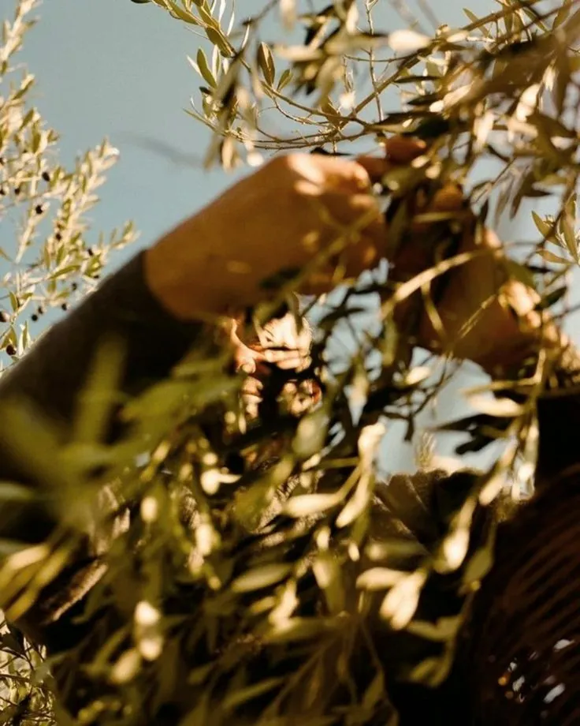
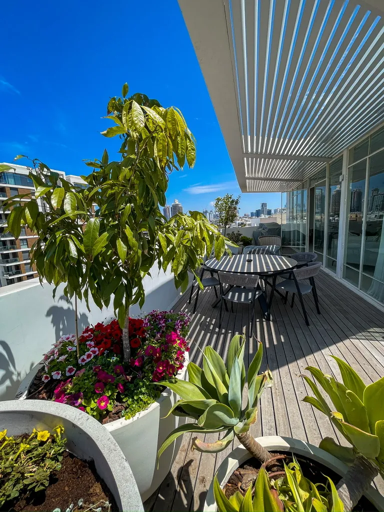
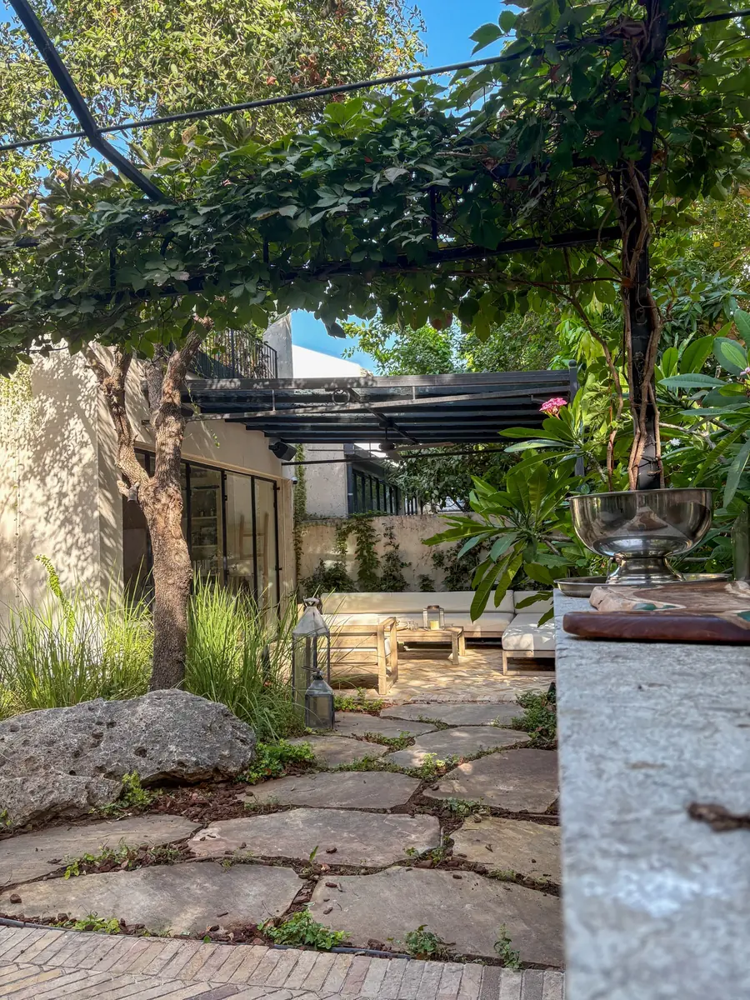

תכנון ותקציב
תכנון ותקציב
תחזוקת כלי גינון — איך שומרים על הכלים לאורך שנים
ניקוי, חיטוי, חידוד ואחסון — ארבעה שלבים שמכפילים את אורך החיים של כל כלי ומונעים מחלות בגינה.
 צמחים וגידול
צמחים וגידול
צמחים שדוחים יתושים — מה באמת עובד ומה מיתוס
מחקר מדעי על גרס סיטרונלה, לוונדר ונפית החתולים — אילו צמחים מוכחים ואיך להשתמש בהם נכון.
 תכנון וסביבה
תכנון וסביבה
גינה בת-קיימא — מה זה אומר בפועל
מים, קרקע, צמחים ומגוון ביולוגי — העקרונות שהופכים גינה לכזו שמחזיקה שנים ועולה פחות לתחזוקה.
 מרפסת
מרפסת
גן ירק במרפסת — המדריך המלא
חומר גידול, כלים, השקיה ובחירת ירקות — כל מה שצריך לדעת לפני שמתחילים, עם לוח זריעה מלא.
 מרפסת
מרפסת
גינת תבלינים במרפסת — איך עושים את זה נכון
הכנה, בחירת צמחים, השקיה וטיפול — המדריך המעשי לגינת תבלינים שחיה ונותנת תוצאות.

צמחים וגידולעץ הזית בגינה הפרטית — מה צריך לדעת לפני שנוטעים
בחירת זן, מיקום, השקיה, גיזום ומזיקים — מדריך מקצועי לנטיעת זית שיצליח לטווח ארוך.

פנטהאוז וגגגינת פנטהאוז — המדריך המלא
כל מה שצריך לדעת לפני תכנון גינת פנטהאוז: עומסים, רוחות, צמחייה מתאימה ועלויות אמיתיות.
 צמחים וגידול
צמחים וגידול
10 צמחים מושלמים למרפסת בתל אביב
צמחים שמחזיקים בחום, ברוח ובשמש הישראלית — עם המלצות על מיקום, השקיה וגידול בעציצים.

תכנון ותקציבכמה עולה הקמת גינה? מדריך מחירים 2026
טווחי מחירים אמיתיים לכל סוגי הגינות — מרפסת, גג, בית קרקע. מה משפיע על המחיר ואיך לתכנן נכון.
לא נמצאו מאמרים בקטגוריה זו.